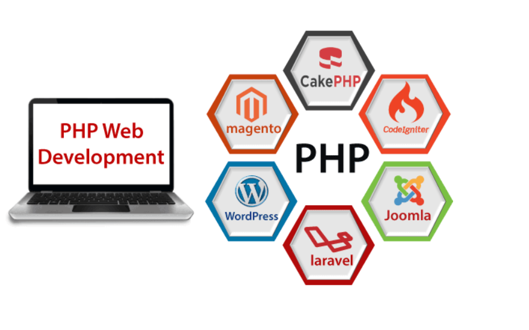

PHP is a server side scripting language that is embedded in HTML. It is used to manage dynamic content, databases, session tracking, even build entire e-commerce sites. It is integrated with a number of popular databases, including MySQL, PostgreSQL, Oracle, Sybase, Informix, and Microsoft SQL Server.
PHP is an open-source, interpreted, and object-oriented scripting language that can be executed at the server-side. PHP is well suited for web development. Therefore, it is used to develop web applications (an application that executes on the server and generates the dynamic page.).
PHP was created by Rasmus Lerdorf in 1994 but appeared in the market in 1995. PHP 7.4.0 is the latest version of PHP, which was released on 28 November. Some important points need to be noticed about PHP are as followed:
PHP is a server-side scripting language, which is used to design the dynamic web applications with MySQL database.
PHP is very popular language because of its simplicity and open source. There are some important features of PHP given below:
PHP script is executed much faster than those scripts which are written in other languages such as JSP and ASP. PHP uses its own memory, so the server workload and loading time is automatically reduced, which results in faster processing speed and better performance.
PHP source code and software are freely available on the web. You can develop all the versions of PHP according to your requirement without paying any cost. All its components are free to download and use.
PHP has easily understandable syntax. Programmers are comfortable coding with it.
PHP code can be easily embedded within HTML tags and script.
PHP is available for WINDOWS, MAC, LINUX & UNIX operating system. A PHP application developed in one OS can be easily executed in other OS also.
PHP supports all the leading databases such as MySQL, SQLite, ODBC, etc.
PHP has predefined error reporting constants to generate an error notice or warning at runtime. E.g., E_ERROR, E_WARNING, E_STRICT, E_PARSE.
PHP allows us to use a variable without declaring its datatype. It will be taken automatically at the time of execution based on the type of data it contains on its value.
PHP is compatible with almost all local servers used today like Apache, Netscape, Microsoft IIS, etc.
PHP is a secure language to develop the website. It consists of multiple layers of security to prevent threads and malicious attacks.
Different programming languages require long script or code, whereas PHP can do the same work in a few lines of code. It has maximum control over the websites like you can make changes easily whenever you want.
It has a large community of developers who regularly updates documentation, tutorials, online help, and FAQs. Learning PHP from the communities is one of the significant benefits.